Raw, detrended and within-year composites
The same composites with the trend or the interannual signal removed.
Cross-site synthesis
Significant and robust pairs by field and version; classes by site group
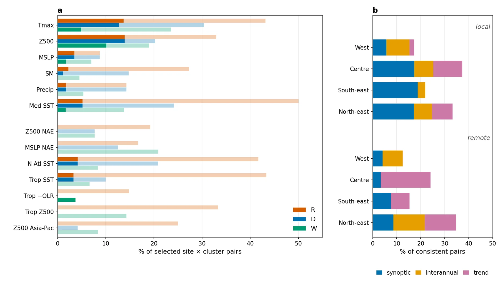
About this figure
(a) For each field and version (R orange, D blue, W green): % of selected site × cluster pairs with p < 0.05 in training 1950–2010 (light) and robust, i.e. also p < 0.05 with the same sign in test 2011–2021 (dark). (b) Class of the consistently selected pairs by site group (West = Murcia, Algeria; Centre = Monaco, Sardinia, Croatia, Tunisia; South-east = Libya, Egypt; North-east = Albania, Greece, Turkey, Syria), local and remote; the rest up to 100% is 'none'. R gives the most training-significant pairs but replicates least (Med SST: 50% significant, 10% of those replicate), while for local fields D replicates best (36% vs 24% for R).
tres_versiones/figuras/sintesis/S3_versions_classes.png
Links from each site to its classified selected clusters (six local fields)
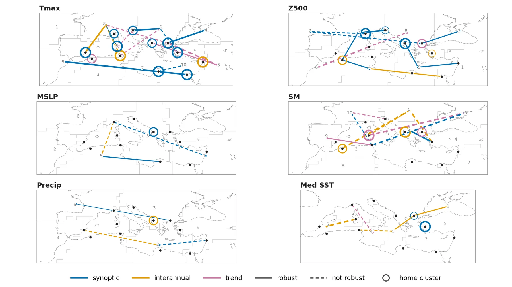
About this figure
For Tmax, Z500, MSLP, soil moisture, precipitation and Mediterranean SST, a line joins each site (black dot) to the centroid of every consistently selected cluster that has a class: colour = class (synoptic blue, interannual orange, trend pink), width = number of seeds, solid = robust in ≥ 1 seed, dashed = not robust, ring = the site's own (home) cluster. Clusters with a signal lie in or next to the home cluster (42.9% of robust pairs are home clusters vs 12.0% by chance), while 'none' clusters (not drawn) are spread over the whole domain. The critical review finds the same home > neighbour > far gradient among non-selected clusters at the same lags, so this is largely a property of the composites rather than of the CRO.
tres_versiones/figuras/sintesis/S1_site_cluster_links.png
Selected cluster longitude, cluster sharing vs distance and lag windows by site
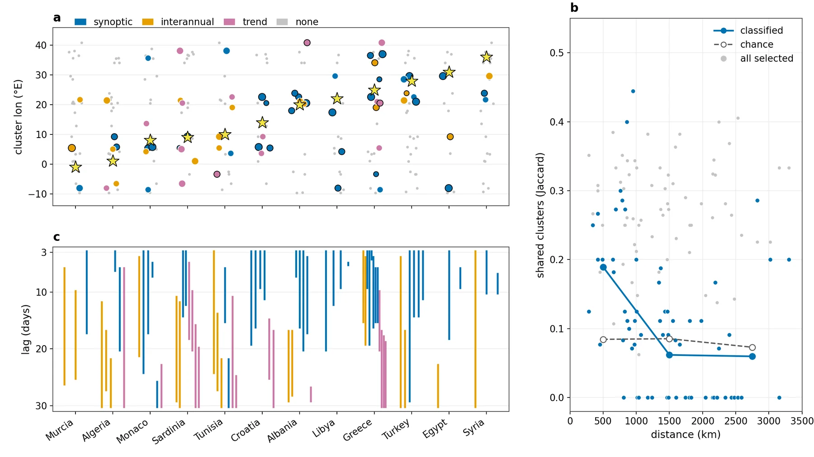
About this figure
(a) Centroid longitude of each site's selected local clusters (sites ordered west to east): colour = class, size = seeds, black edge = robust, grey = none, star = site longitude. (b) Share of classified clusters (Jaccard) for each pair of sites vs distance (blue; line = bin mean) against chance (grey dashed), light grey = all consistent selections; (c) lag window of each classified local pair (bar from first to last lag). Sites < 1000 km apart share more classified clusters (Jaccard 0.19 vs 0.08 by chance), but the critical review rates this as weak because it follows shared heatwave days, and it finds that the west-to-east shift in (a) is explained by home and neighbour geometry.
tres_versiones/figuras/sintesis/S2_position_sharing_lead.png
Cross-site statistics
Class of the best consistently selected cluster per site and field
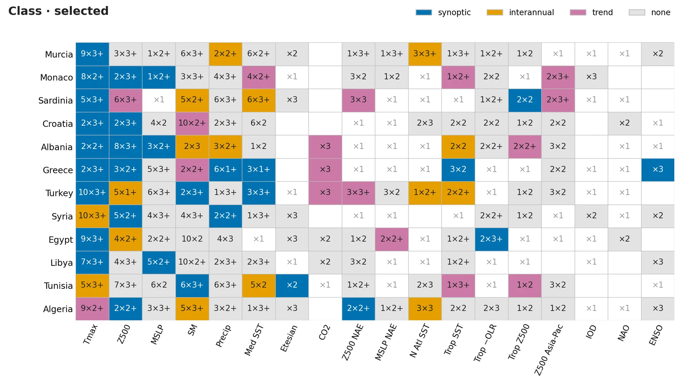
About this figure
Site × field matrix coloured by the class (synoptic, interannual, trend, none) of the best consistently selected cluster of each field (chosen by ≥ 2 seeds or robust). The cell text is cluster × number of seeds; '+' means other consistent clusters exist in that field, grey '×1' means only single-seed selections and white means never selected; CO2 can only be 'trend' or 'none'. Of the 341 consistent site × cluster pairs, 43 are synoptic, 24 interannual, 28 trend and 246 none.
tres_versiones/figuras/cruzado/X1_classification_matrix.png
Class of selected vs non-selected clusters at the same lags, by field
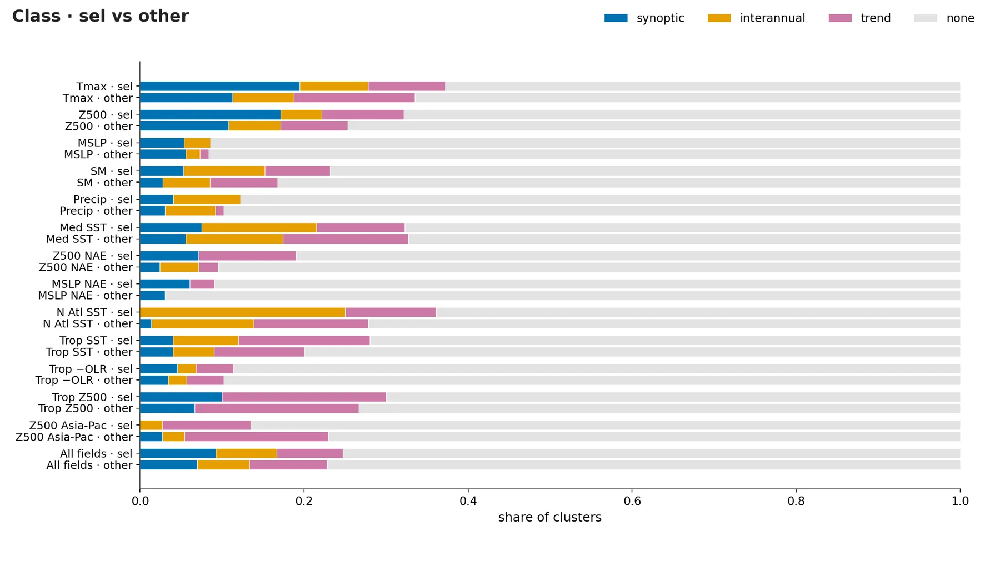
About this figure
Share of clusters in each class (synoptic, interannual, trend, none) among the CRO-selected clusters ('sel') and among the non-selected clusters of the same field at the same lags ('other'), by field; all three classes require the same contrast sign in test 2011–2021. Over all fields (selected vs non-selected): synoptic 9.3% vs 7.0%, interannual 7.4% vs 6.4%, trend 8.1% vs 9.5%.
tres_versiones/figuras/cruzado/X6_class_selected_vs_nonselected.png
Share of selections at rank 1 of their field, by version (train and test)
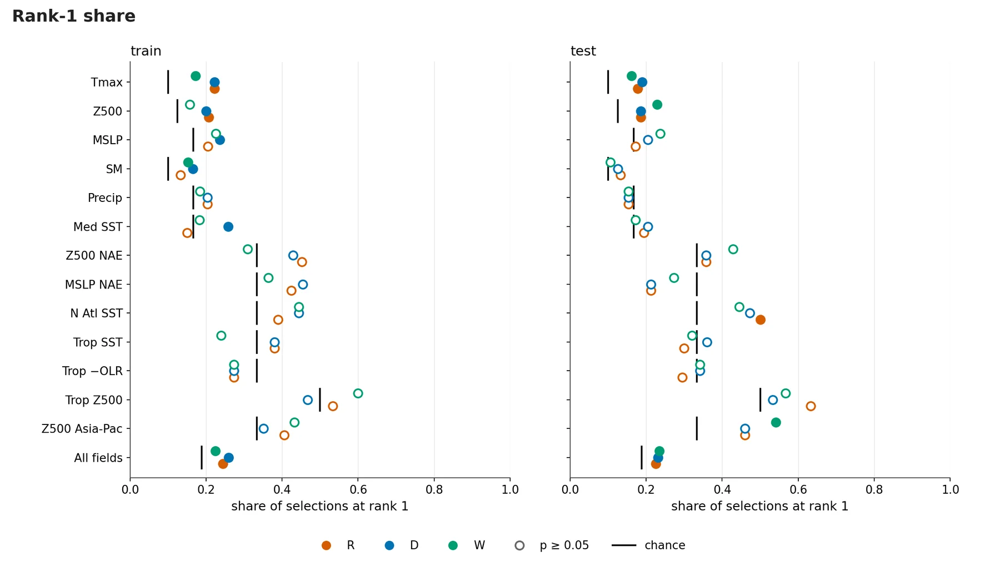
About this figure
Share of CRO selections whose cluster has the largest |contrast| of its field at the same lags (rank 1), by field and version, for training (left) and test (right); black tick = chance (mean of 1/k); R and D are contrasts with all days of the same period, and W is already a contrast. Filled = p < 0.05, hollow = p ≥ 0.05 (cluster-label permutation by site). Over all fields, rank 1 occurs in 24% (R), 26% (D) and 22% (W) of training selections and 22–23% in test, against 19% by chance (p ≤ 0.001). This is only slightly better than chance and is concentrated in Tmax and local Z500.
tres_versiones/figuras/cruzado/X2_rank1_share.png
Ranking changes between R, D and W by field (training 1950–2010)
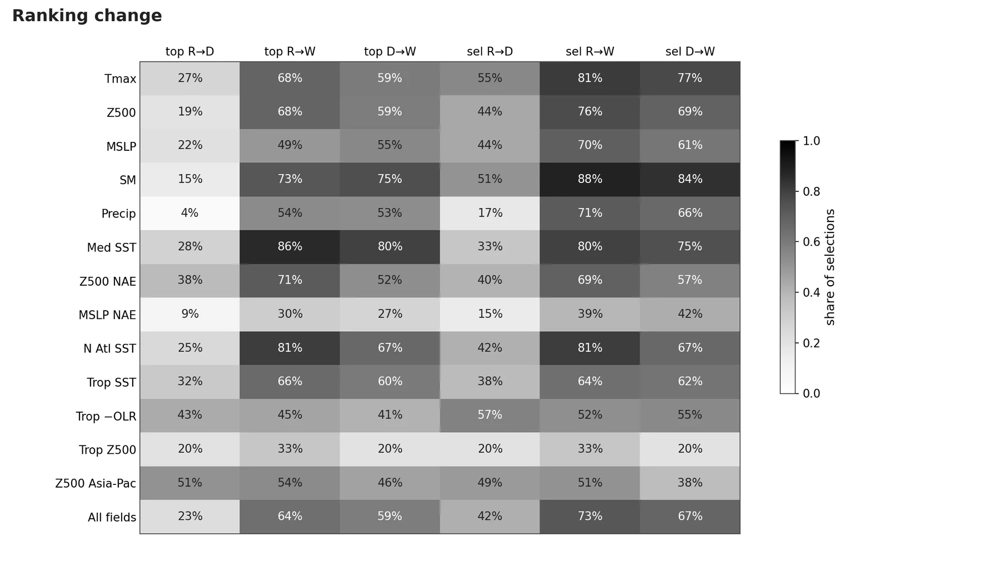
About this figure
Percentage of selections in which the field's cluster with the largest |contrast| changes ('top'), or the rank of the selected cluster changes ('sel'), when going from R to D, from R to W and from D to W (training; R and D as contrasts with all days). Over all fields the top cluster changes in 23% of selections from R to D, but in 64% from R to W and 59% from D to W: removing the trend reorders little, while removing the annual mean reorders a lot.
tres_versiones/figuras/cruzado/X3_ranking_changes.png
Selected vs non-selected clusters: |contrast| by field and version (train)
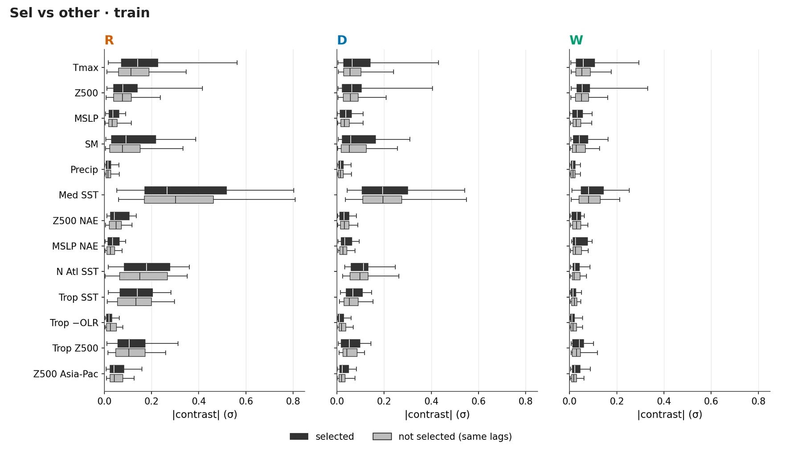
About this figure
Distribution of the in-cluster |contrast| (R−all, D−all and W; σ) of CRO-selected clusters (dark) and of the non-selected clusters of the same field at the same lags (light), training 1950–2010; box = quartiles, whiskers = 5th–95th percentiles, common axis 0–0.85σ. Overall there is no difference in magnitude (medians R 0.072 vs 0.077, D 0.049 vs 0.049, W 0.036 vs 0.037σ). Differences that favour the selected clusters appear in only a few fields, e.g. Tmax.
tres_versiones/figuras/cruzado/X4_selected_vs_nonselected_train.png
Selected vs non-selected clusters: |contrast| by field and version (test)
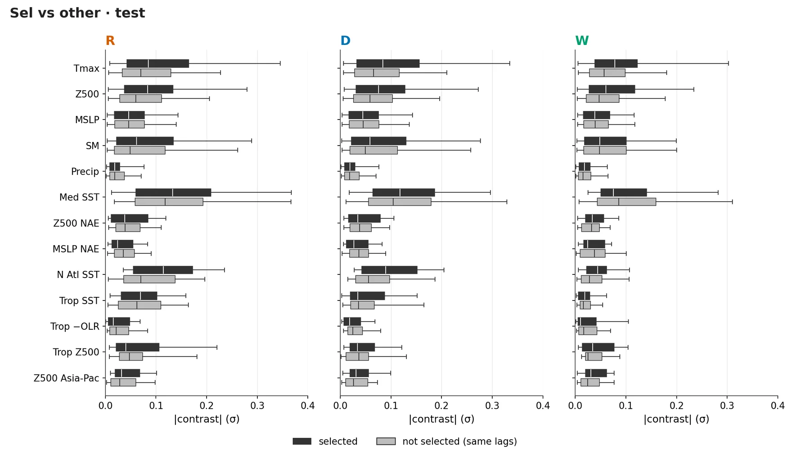
About this figure
Same comparison as the training panel, for test 2011–2021: in-cluster |contrast| of selected (dark) vs non-selected clusters at the same lags (light); box = quartiles, whiskers = 5th–95th percentiles, axis 0–0.40σ. The medians are almost identical (R 0.056 vs 0.055, D 0.052 vs 0.052, W 0.043 vs 0.044σ), with small advantages for the selected clusters in Tmax and local Z500.
tres_versiones/figuras/cruzado/X4_selected_vs_nonselected_test.png
Clusters selected by ≥ 2 seeds in several sites: class, seeds and robustness
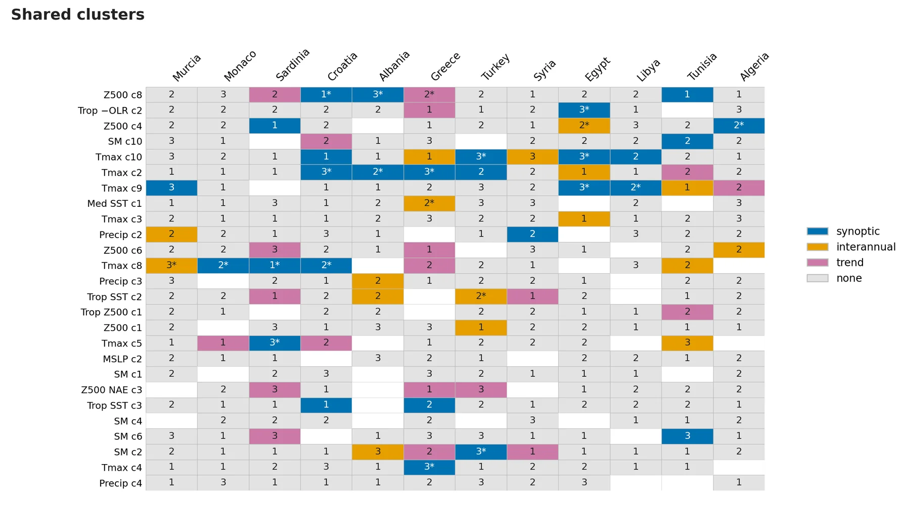
About this figure
Rows: the first 26 clusters selected by ≥ 2 seeds in more than one site; columns: sites. Colour = class of the cluster in that site, number = seeds that selected it, * = robust, blank = not selected. The seed count is the number of seeds that selected the cluster, not the number of seeds that give that class.
tres_versiones/figuras/cruzado/X5_shared_clusters.png
Field atlases: local fields
Tmax (local): detrended (D) composites by site, train 1950–2010
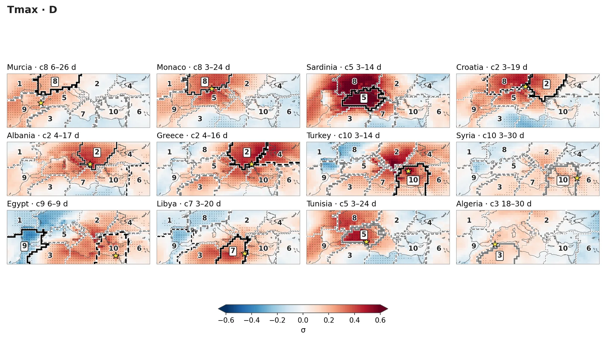
About this figure
One panel per site: training composite of the detrended (D) Tmax anomaly before heatwave days, at the representative lag window of the field's most-selected cluster in that site (label: site · cluster · window), which has a solid outline and a boxed number; other Tmax clusters selected in that site are dashed and were chosen at their own lags. Outline thickness = seeds (1–3), black = robust, grey = not robust; dots = p < 0.05 (year permutation, uncorrected); star = site; fixed scale ±0.6σ. D is the main atlas version; R and W are also drawn for Tmax (median spatial correlation with D: R 0.95, W 0.92).
tres_versiones/figuras/atlas/A_L_t2m_max_D.png
Tmax (local): plain-anomaly (R) composites by site, train 1950–2010
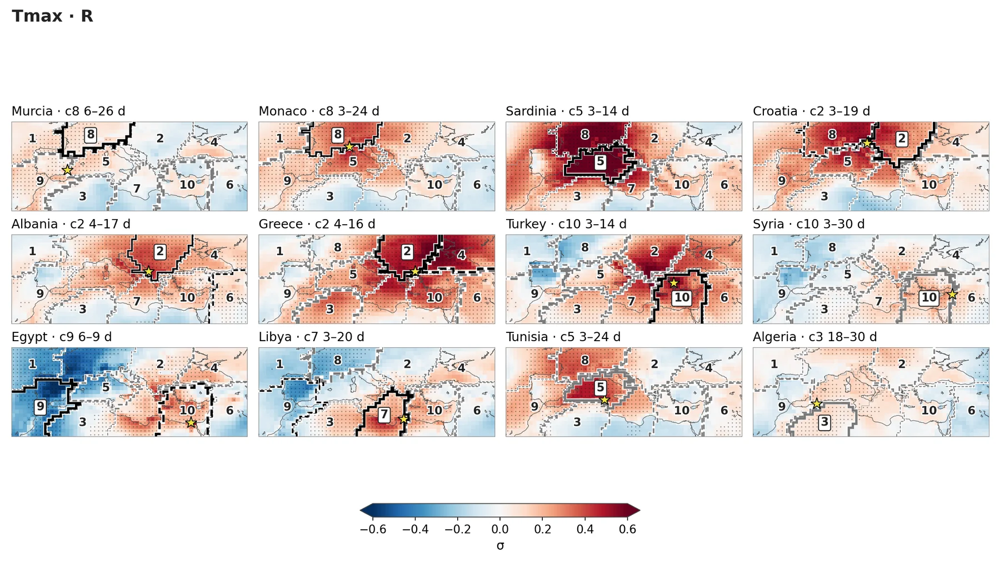
About this figure
Same layout as the D atlas, but with the plain anomaly (R, relative to the 1980–2010 climatology) of Tmax at each site's representative window: solid boxed cluster = the panel's cluster, dashed = other selected clusters (chosen at their own lags); thickness = seeds, black = robust; dots = p < 0.05; star = site; scale ±0.6σ. R also keeps the long-term trend that D removes; median spatial correlation with D across sites is 0.95.
tres_versiones/figuras/atlas/A_L_t2m_max_R.png
Tmax (local): within-year (W) composites by site, train 1950–2010
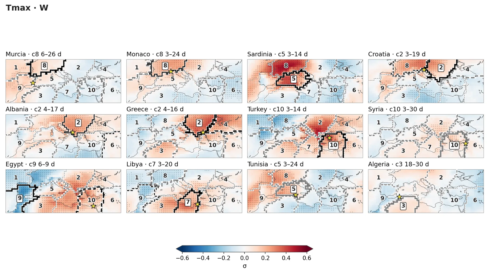
About this figure
Same layout as the D atlas, with the within-year (W) Tmax anomaly, i.e. the heatwave-day value minus the mean of the non-heatwave days of the same year, which keeps only the synoptic and subseasonal part. Solid boxed cluster = the panel's cluster, dashed = other selected clusters; thickness = seeds, black = robust; dots = p < 0.05; star = site; scale ±0.6σ. Median spatial correlation with D across sites: 0.92.
tres_versiones/figuras/atlas/A_L_t2m_max_W.png
Z500 (local): detrended (D) composites by site, train 1950–2010
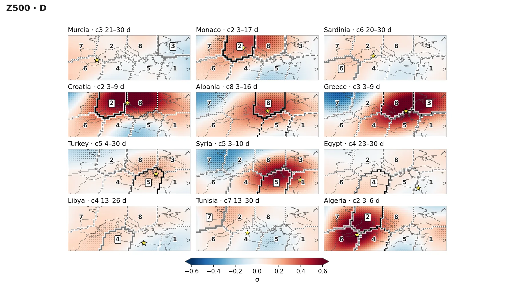
About this figure
One panel per site: training composite of the detrended (D) local Z500 anomaly before heatwave days, at the representative window of the field's most-selected cluster in that site (solid outline, boxed number); other selected Z500 clusters are dashed and were chosen at their own lags; thickness = seeds, black = robust, grey = not robust; dots = p < 0.05; star = site; scale ±0.6σ. No R atlas is drawn for local Z500 because R and D are nearly identical (median spatial correlation 0.99; W–D 0.98).
tres_versiones/figuras/atlas/A_L_z500_D.png
Z500 (local): within-year (W) composites by site, train 1950–2010
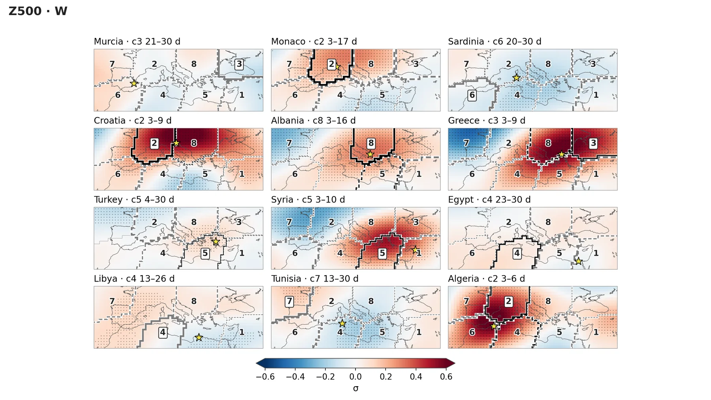
About this figure
Same layout as the D atlas, with the within-year (W) local Z500 anomaly at each site's representative window; solid boxed cluster = the panel's cluster, dashed = other selected clusters; thickness = seeds, black = robust; dots = p < 0.05; star = site; scale ±0.6σ. The pre-heatwave ridges are almost unchanged from D (median spatial correlation 0.98), consistent with local Z500 being almost entirely synoptic.
tres_versiones/figuras/atlas/A_L_z500_W.png
MSLP (local): detrended (D) composites by site, train 1950–2010
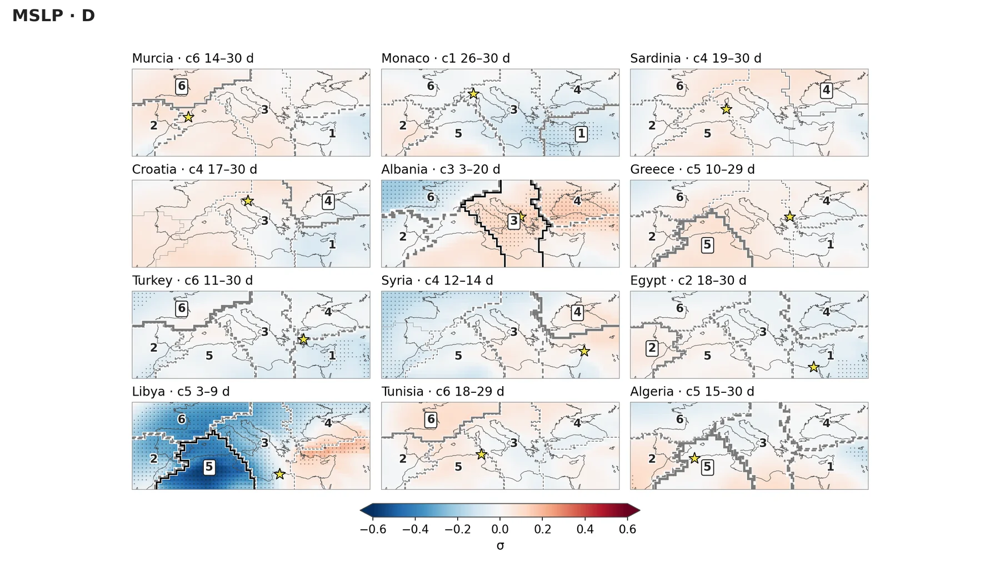
About this figure
One panel per site: training composite of the detrended (D) local MSLP anomaly before heatwave days, at the representative window of the field's most-selected cluster in that site (solid outline, boxed number); dashed = other selected MSLP clusters (chosen at their own lags); thickness = seeds, black = robust, grey = not robust; dots = p < 0.05; star = site; scale ±0.6σ. Median spatial correlation with D: R 0.94, W 0.84; the critical review finds little MSLP signal overall (only 3.5% of selected pairs are robust in D).
tres_versiones/figuras/atlas/A_L_msl_D.png
MSLP (local): plain-anomaly (R) composites by site, train 1950–2010
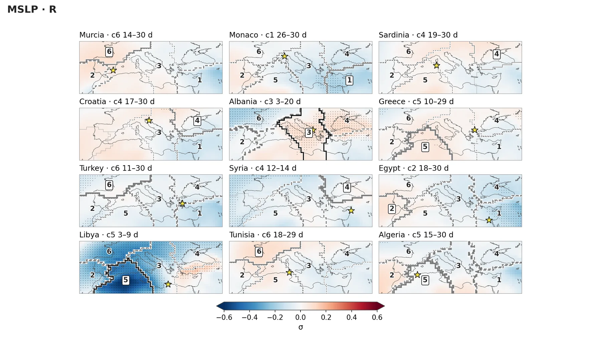
About this figure
Same layout as the D atlas, with the plain anomaly (R) of local MSLP at each site's representative window; solid boxed cluster = the panel's cluster, dashed = other selected clusters; thickness = seeds, black = robust; dots = p < 0.05; star = site; scale ±0.6σ. Median spatial correlation with D across sites: 0.94.
tres_versiones/figuras/atlas/A_L_msl_R.png
MSLP (local): within-year (W) composites by site, train 1950–2010
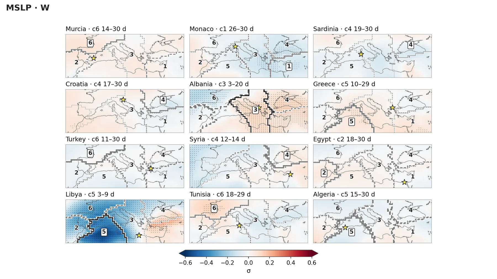
About this figure
Same layout as the D atlas, with the within-year (W) local MSLP anomaly at each site's representative window; solid boxed cluster = the panel's cluster, dashed = other selected clusters; thickness = seeds, black = robust; dots = p < 0.05; star = site; scale ±0.6σ. Median spatial correlation with D across sites: 0.84.
tres_versiones/figuras/atlas/A_L_msl_W.png
Soil moisture (local): detrended (D) composites by site, train 1950–2010
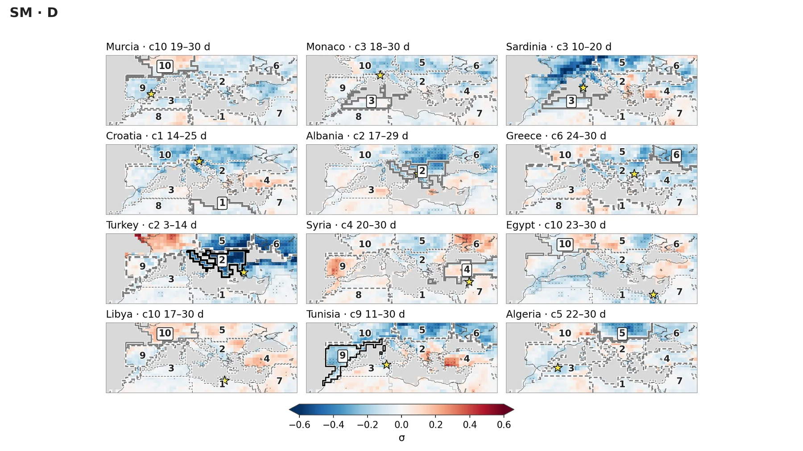
About this figure
One panel per site: training composite of the detrended (D) top-layer soil-moisture anomaly before heatwave days, at the representative window of the field's most-selected cluster in that site (solid outline, boxed number); dashed = other selected soil-moisture clusters (chosen at their own lags); thickness = seeds, black = robust, grey = not robust; dots = p < 0.05; star = site; scale ±0.6σ (blue = drier). Median spatial correlation with D: R 0.93, W 0.65; the soil-moisture signals are mostly interannual or trend, i.e. dry summers over wide areas rather than a regional precursor.
tres_versiones/figuras/atlas/A_L_sm1_D.png
Soil moisture (local): plain-anomaly (R) composites by site, train 1950–2010
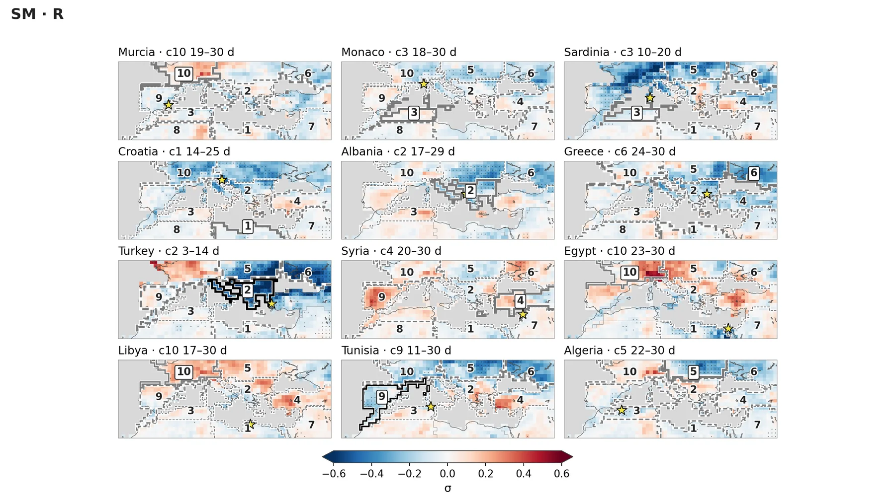
About this figure
Same layout as the D atlas, with the plain anomaly (R) of soil moisture at each site's representative window; solid boxed cluster = the panel's cluster, dashed = other selected clusters; thickness = seeds, black = robust; dots = p < 0.05; star = site; scale ±0.6σ. Median spatial correlation with D across sites: 0.93.
tres_versiones/figuras/atlas/A_L_sm1_R.png
Soil moisture (local): within-year (W) composites by site, train 1950–2010
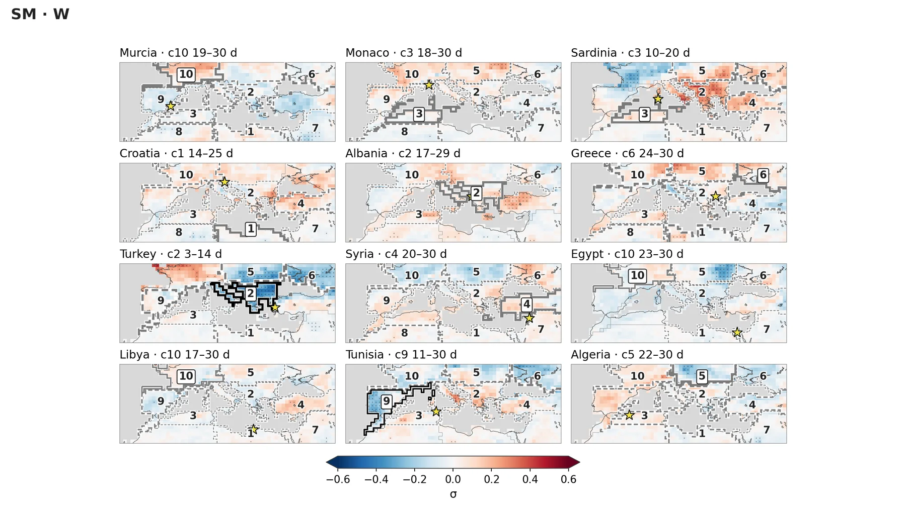
About this figure
Same layout as the D atlas, with the within-year (W) soil-moisture anomaly at each site's representative window; solid boxed cluster = the panel's cluster, dashed = other selected clusters; thickness = seeds, black = robust; dots = p < 0.05; star = site; scale ±0.6σ. W differs most from D among the local fields (median spatial correlation 0.65), and no selected soil-moisture pair is robust in W.
tres_versiones/figuras/atlas/A_L_sm1_W.png
Precipitation (local): detrended (D) composites by site, train 1950–2010
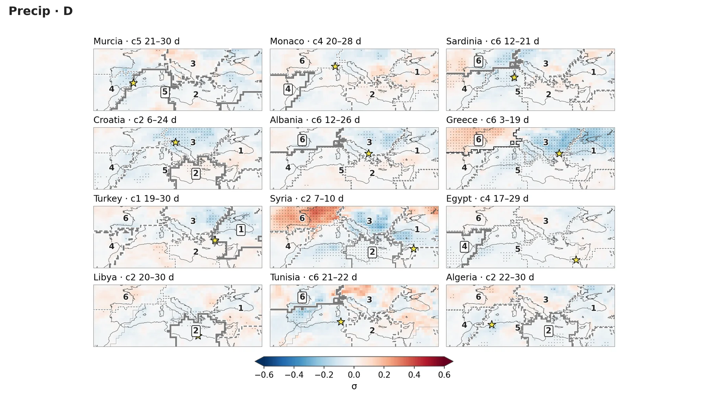
About this figure
One panel per site: training composite of the detrended (D) precipitation anomaly before heatwave days, at the representative window of the field's most-selected cluster in that site (solid outline, boxed number); dashed = other selected precipitation clusters (chosen at their own lags); thickness = seeds, black = robust, grey = not robust; dots = p < 0.05; star = site; scale ±0.6σ. No R atlas is drawn because R and D are nearly identical (median spatial correlation 0.98; W–D 0.84).
tres_versiones/figuras/atlas/A_L_tp_D.png
Precipitation (local): within-year (W) composites by site, train 1950–2010
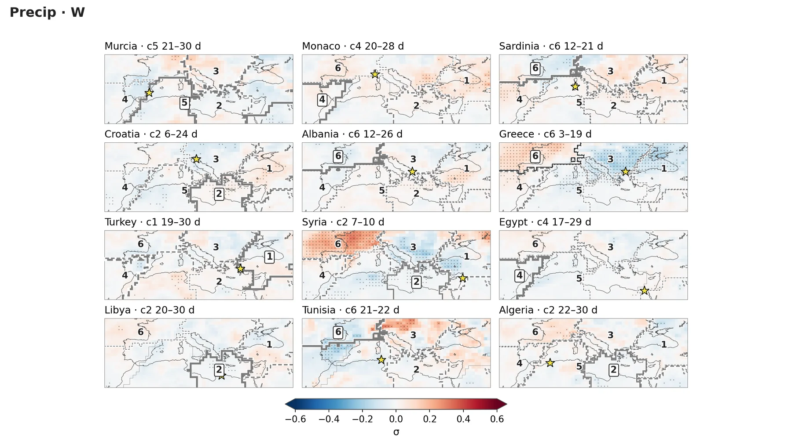
About this figure
Same layout as the D atlas, with the within-year (W) precipitation anomaly at each site's representative window; solid boxed cluster = the panel's cluster, dashed = other selected clusters; thickness = seeds, black = robust; dots = p < 0.05; star = site; scale ±0.6σ. Median spatial correlation with D across sites: 0.84.
tres_versiones/figuras/atlas/A_L_tp_W.png
Mediterranean SST: detrended (D) composites by site, train 1950–2010
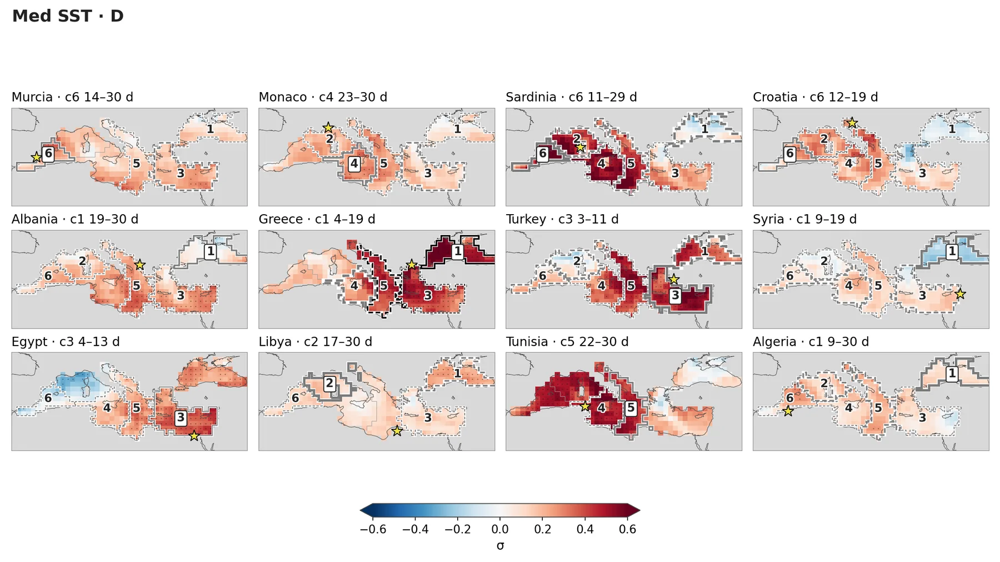
About this figure
One panel per site: training composite of the detrended (D) Mediterranean SST anomaly before heatwave days, at the representative window of the field's most-selected cluster in that site (solid outline, boxed number); dashed = other selected SST clusters (chosen at their own lags); thickness = seeds, black = robust, grey = not robust; dots = p < 0.05; star = site; scale ±0.6σ. D is the most informative version for this field (the R signal is mostly trend); median spatial correlation with D: R 0.78, W 0.69.
tres_versiones/figuras/atlas/A_L_sstMed_D.png
Mediterranean SST: plain-anomaly (R) composites by site, train 1950–2010
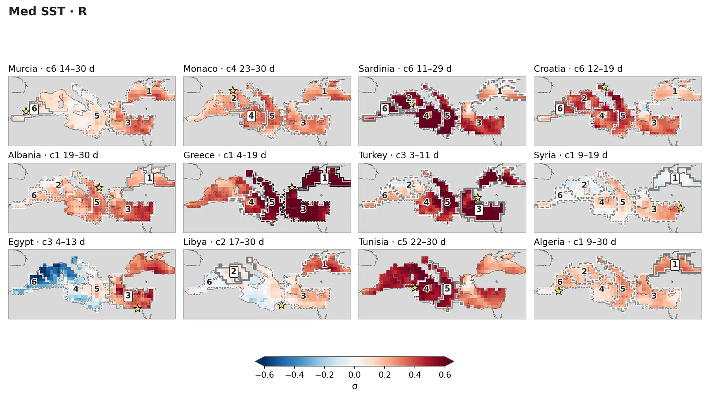
About this figure
Same layout as the D atlas, with the plain anomaly (R) of Mediterranean SST at each site's representative window; solid boxed cluster = the panel's cluster, dashed = other selected clusters; thickness = seeds, black = robust; dots = p < 0.05; star = site; scale ±0.6σ. Several panels are saturated by a near-uniform warm shift from the trend: 37% of the area is at the scale limit in Sardinia (11–29 d), 49% in Greece (4–19 d) and 38% in Turkey (3–11 d), against 12%, 3% and 5% in D, so the spatial structure should be read in D.
tres_versiones/figuras/atlas/A_L_sstMed_R.png
Mediterranean SST: within-year (W) composites by site, train 1950–2010
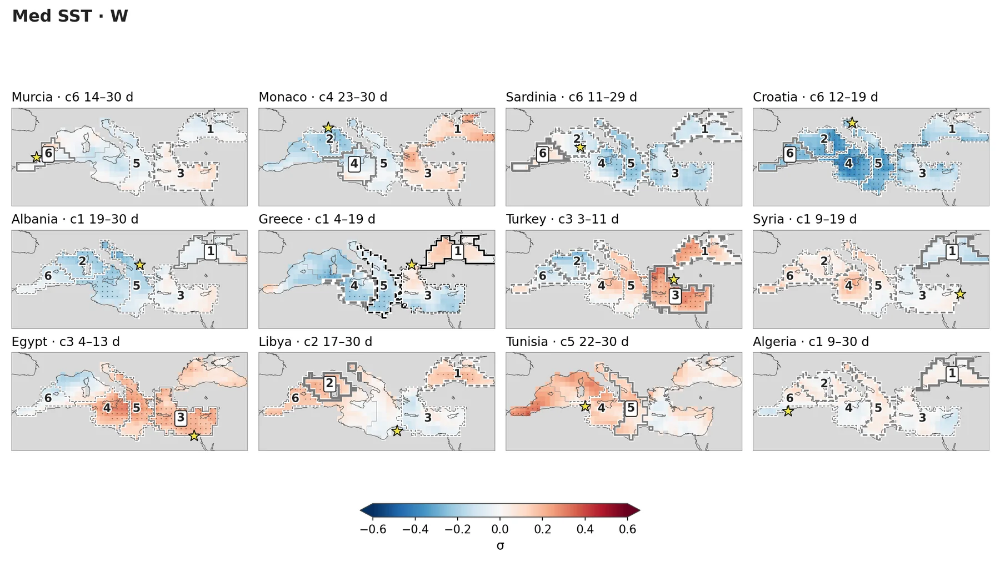
About this figure
Same layout as the D atlas, with the within-year (W) Mediterranean SST anomaly at each site's representative window; solid boxed cluster = the panel's cluster, dashed = other selected clusters; thickness = seeds, black = robust; dots = p < 0.05; star = site; scale ±0.6σ. Removing each year's mean leaves little of the SST signal (median spatial correlation with D 0.69).
tres_versiones/figuras/atlas/A_L_sstMed_W.png
Field atlases: remote fields
Z500 N Atlantic–Europe: detrended (D) composites by site, train 1950–2010
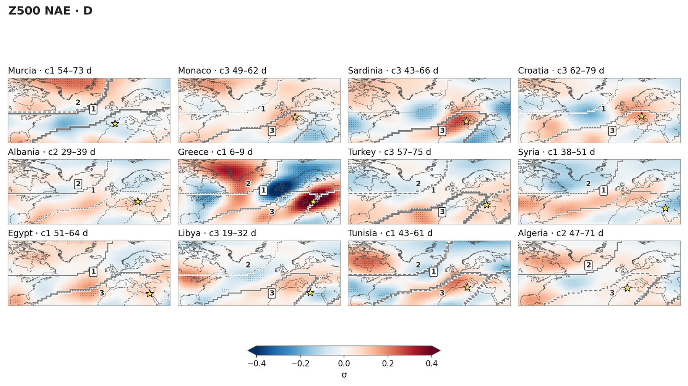
About this figure
One panel per site: training composite of the detrended (D) Z500 anomaly over the North Atlantic–Europe box (k = 3 clusters, 2°) before heatwave days, at the representative window of the field's most-selected cluster in that site (solid outline, boxed number); dashed = other selected clusters (chosen at their own lags). Thickness = seeds, black = robust, grey = not robust; dots = p < 0.05 (year permutation, uncorrected); star = site; fixed scale ±0.4σ. Median spatial correlation with D: R 0.95, W 0.81; no selected Z500 N Atlantic–Europe pair is robust in any version.
tres_versiones/figuras/atlas/A_R_z500_D.png
Z500 N Atlantic–Europe: plain-anomaly (R) composites by site, train 1950–2010
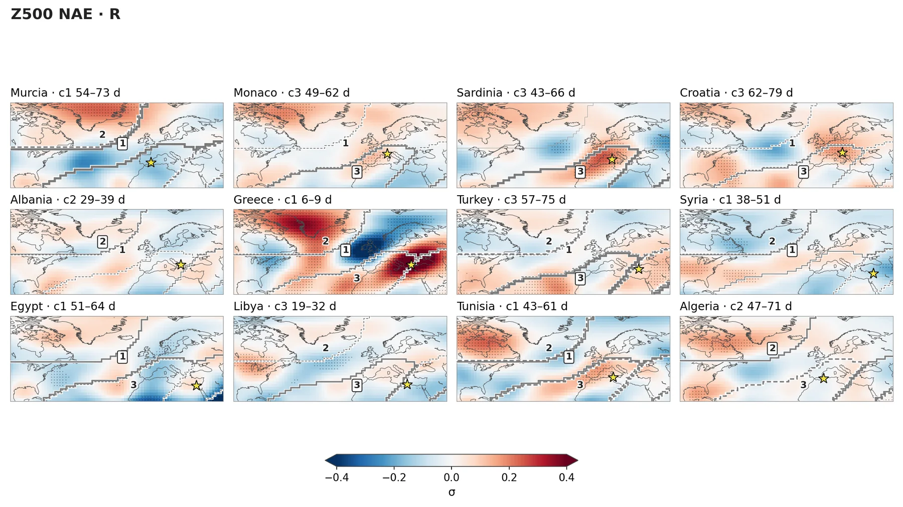
About this figure
Same layout as the D atlas, with the plain anomaly (R) of North Atlantic–Europe Z500 at each site's representative window; solid boxed cluster = the panel's cluster, dashed = other selected clusters; thickness = seeds, black = robust; dots = p < 0.05; scale ±0.4σ. Median spatial correlation with D across sites: 0.95.
tres_versiones/figuras/atlas/A_R_z500_R.png
Z500 N Atlantic–Europe: within-year (W) composites by site, train 1950–2010
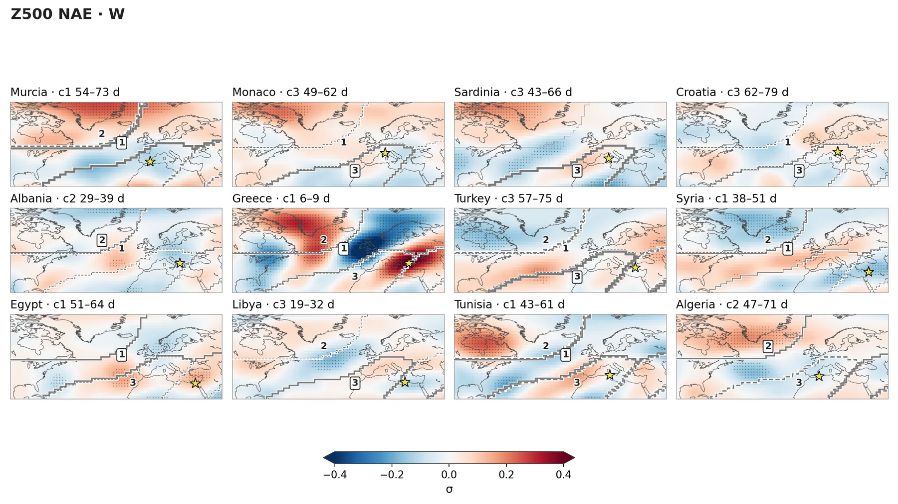
About this figure
Same layout as the D atlas, with the within-year (W) North Atlantic–Europe Z500 anomaly at each site's representative window; solid boxed cluster = the panel's cluster, dashed = other selected clusters; thickness = seeds, black = robust; dots = p < 0.05; scale ±0.4σ. Median spatial correlation with D across sites: 0.81.
tres_versiones/figuras/atlas/A_R_z500_W.png
MSLP N Atlantic–Europe: detrended (D) composites by site, train 1950–2010
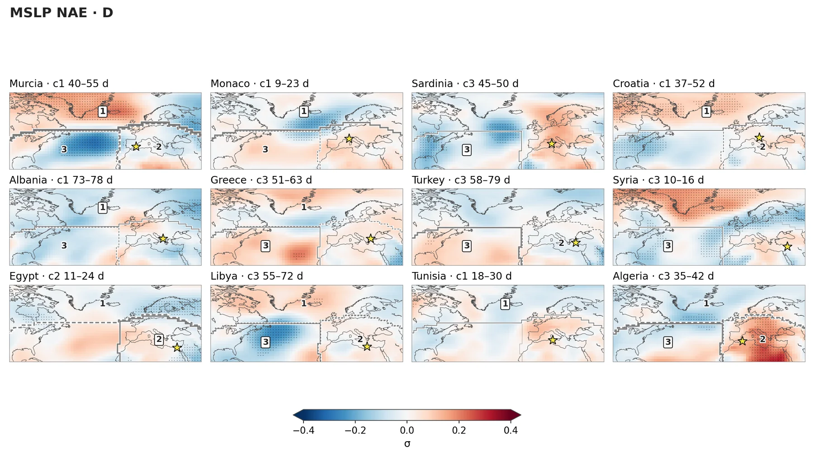
About this figure
One panel per site: training composite of the detrended (D) MSLP anomaly over the North Atlantic–Europe box (k = 3) before heatwave days, at the representative window of the field's most-selected cluster in that site (solid outline, boxed number); dashed = other selected clusters (chosen at their own lags). Thickness = seeds, black = robust, grey = not robust; dots = p < 0.05; star = site; scale ±0.4σ. Median spatial correlation with D: R 0.94, W 0.84; no selected MSLP N Atlantic–Europe pair is robust in any version.
tres_versiones/figuras/atlas/A_R_msl_D.png
MSLP N Atlantic–Europe: plain-anomaly (R) composites by site, train 1950–2010
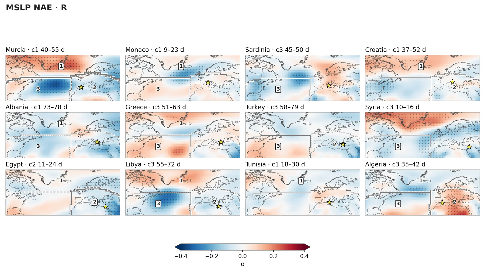
About this figure
Same layout as the D atlas, with the plain anomaly (R) of North Atlantic–Europe MSLP at each site's representative window; solid boxed cluster = the panel's cluster, dashed = other selected clusters; thickness = seeds, black = robust; dots = p < 0.05; scale ±0.4σ. Median spatial correlation with D across sites: 0.94.
tres_versiones/figuras/atlas/A_R_msl_R.png
MSLP N Atlantic–Europe: within-year (W) composites by site, train 1950–2010
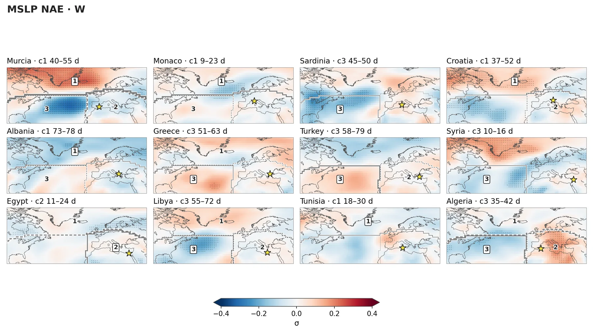
About this figure
Same layout as the D atlas, with the within-year (W) North Atlantic–Europe MSLP anomaly at each site's representative window; solid boxed cluster = the panel's cluster, dashed = other selected clusters; thickness = seeds, black = robust; dots = p < 0.05; scale ±0.4σ. Median spatial correlation with D across sites: 0.84.
tres_versiones/figuras/atlas/A_R_msl_W.png
N Atlantic SST: detrended (D) composites by site, train 1950–2010
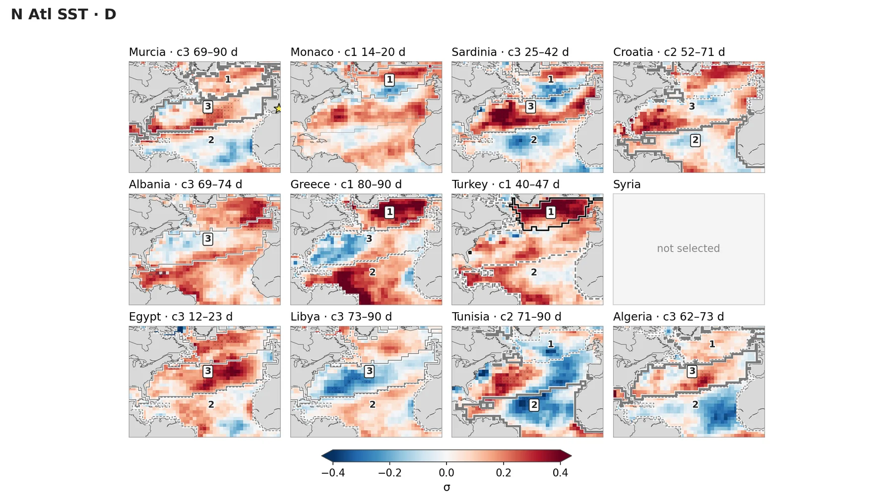
About this figure
One panel per site: training composite of the detrended (D) North Atlantic SST anomaly (k = 3) before heatwave days, at the representative window of the field's most-selected cluster in that site (solid outline, boxed number); dashed = other selected clusters (chosen at their own lags); 'not selected' = field never chosen at that site. Thickness = seeds, black = robust, grey = not robust; dots = p < 0.05; scale ±0.4σ. D is the most informative version for this field (median spatial correlation with D: R 0.91, W 0.44); the robust Turkey c1 panel shows a year-to-year signal, not a synoptic one.
tres_versiones/figuras/atlas/A_A_sst_D.png
N Atlantic SST: plain-anomaly (R) composites by site, train 1950–2010
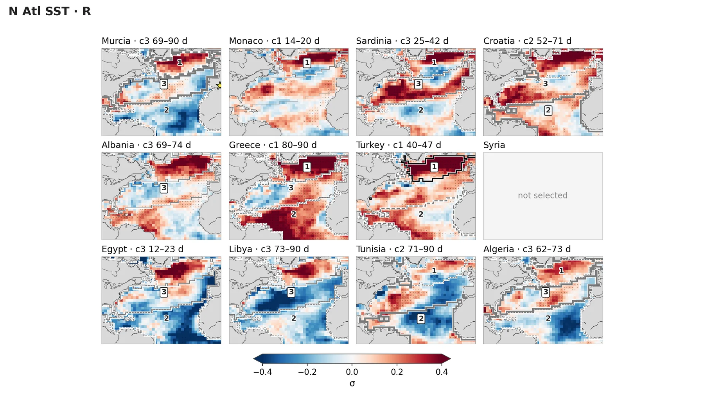
About this figure
Same layout as the D atlas, with the plain anomaly (R) of North Atlantic SST at each site's representative window; solid boxed cluster = the panel's cluster, dashed = other selected clusters; thickness = seeds, black = robust; dots = p < 0.05; scale ±0.4σ. Median spatial correlation with D across sites: 0.91.
tres_versiones/figuras/atlas/A_A_sst_R.png
N Atlantic SST: within-year (W) composites by site, train 1950–2010
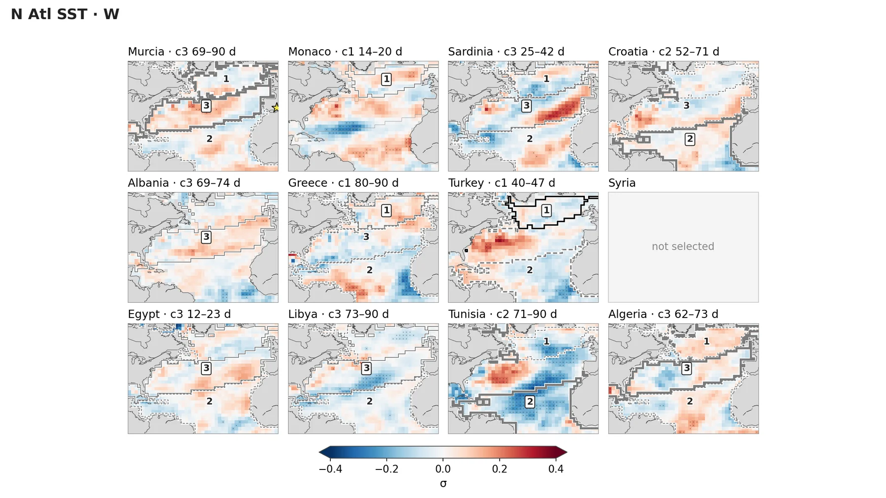
About this figure
Same layout as the D atlas, with the within-year (W) North Atlantic SST anomaly at each site's representative window; solid boxed cluster = the panel's cluster, dashed = other selected clusters; thickness = seeds, black = robust; dots = p < 0.05; scale ±0.4σ. W differs most from D among all fields (median spatial correlation 0.44): the SST patterns of the D panels are largely between-year signals.
tres_versiones/figuras/atlas/A_A_sst_W.png
Tropical SST: detrended (D) composites by site, train 1950–2010
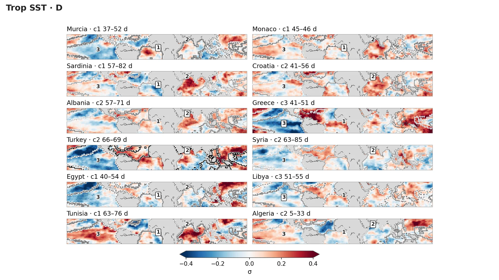
About this figure
One panel per site: training composite of the detrended (D) tropical SST anomaly (k = 3) before heatwave days, at the representative window of the field's most-selected cluster in that site (solid outline, boxed number); dashed = other selected clusters (chosen at their own lags). Thickness = seeds, black = robust, grey = not robust; dots = p < 0.05; scale ±0.4σ. Median spatial correlation with D: R 0.91, W 0.56; D is the most informative version (R is mostly trend).
tres_versiones/figuras/atlas/A_T_sst_D.png
Tropical SST: plain-anomaly (R) composites by site, train 1950–2010
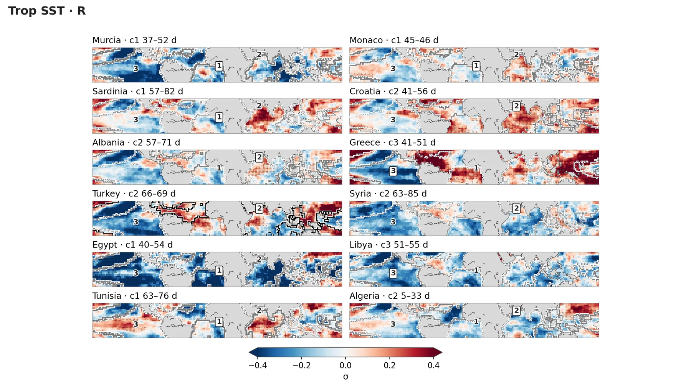
About this figure
Same layout as the D atlas, with the plain anomaly (R) of tropical SST at each site's representative window; solid boxed cluster = the panel's cluster, dashed = other selected clusters; thickness = seeds, black = robust; dots = p < 0.05; scale ±0.4σ. The Egypt panel (40–54 d) is saturated negative by the trend (36% of the area at the scale limit, panel mean −0.30σ; 2% in D) and Greece reaches 19%; read the structure in D.
tres_versiones/figuras/atlas/A_T_sst_R.png
Tropical SST: within-year (W) composites by site, train 1950–2010
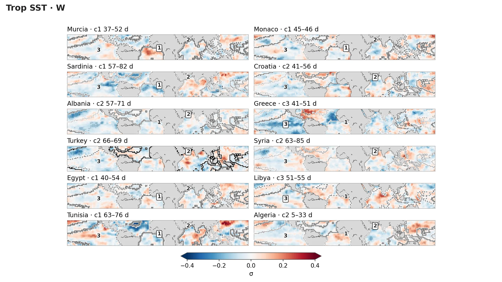
About this figure
Same layout as the D atlas, with the within-year (W) tropical SST anomaly at each site's representative window; solid boxed cluster = the panel's cluster, dashed = other selected clusters; thickness = seeds, black = robust; dots = p < 0.05; scale ±0.4σ. Most of the D signal disappears in W (median spatial correlation 0.56), and no tropical SST pair is robust in W.
tres_versiones/figuras/atlas/A_T_sst_W.png
Tropical −OLR: detrended (D) composites by site, train 1950–2010
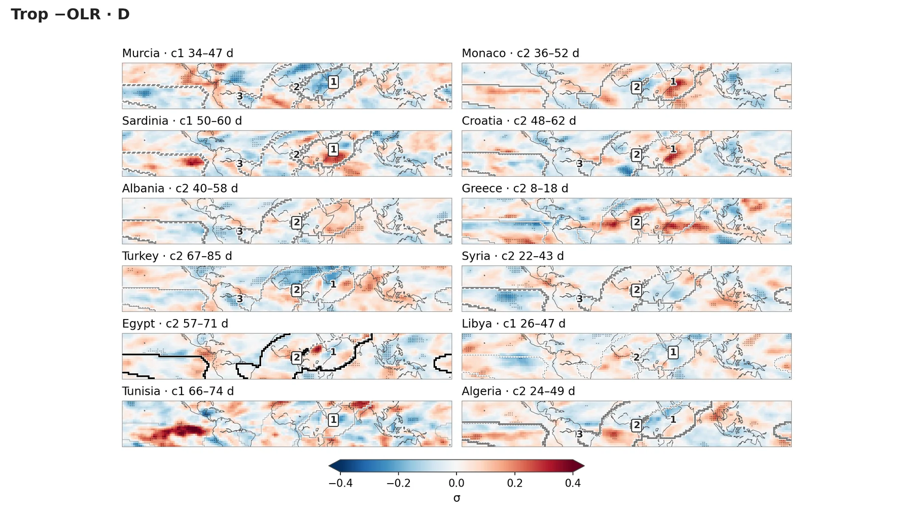
About this figure
One panel per site: training composite of the detrended (D) tropical −OLR anomaly (net TOA longwave, k = 3) before heatwave days, at the representative window of the field's most-selected cluster in that site (solid outline, boxed number); dashed = other selected clusters (chosen at their own lags). Thickness = seeds, black = robust, grey = not robust; dots = p < 0.05; scale ±0.4σ. Median spatial correlation with D: R 0.89, W 0.79; the only robust pair is Egypt c2 (black outline), robust in W in a single seed.
tres_versiones/figuras/atlas/A_T_olr_D.png
Tropical −OLR: plain-anomaly (R) composites by site, train 1950–2010
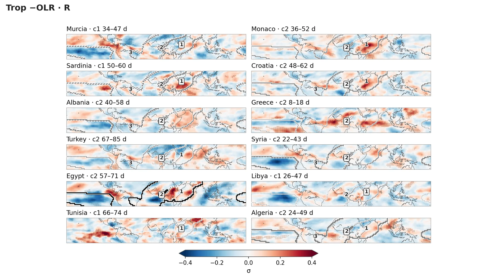
About this figure
Same layout as the D atlas, with the plain anomaly (R) of tropical −OLR at each site's representative window; solid boxed cluster = the panel's cluster, dashed = other selected clusters; thickness = seeds, black = robust; dots = p < 0.05; scale ±0.4σ. Median spatial correlation with D across sites: 0.89.
tres_versiones/figuras/atlas/A_T_olr_R.png
Tropical −OLR: within-year (W) composites by site, train 1950–2010
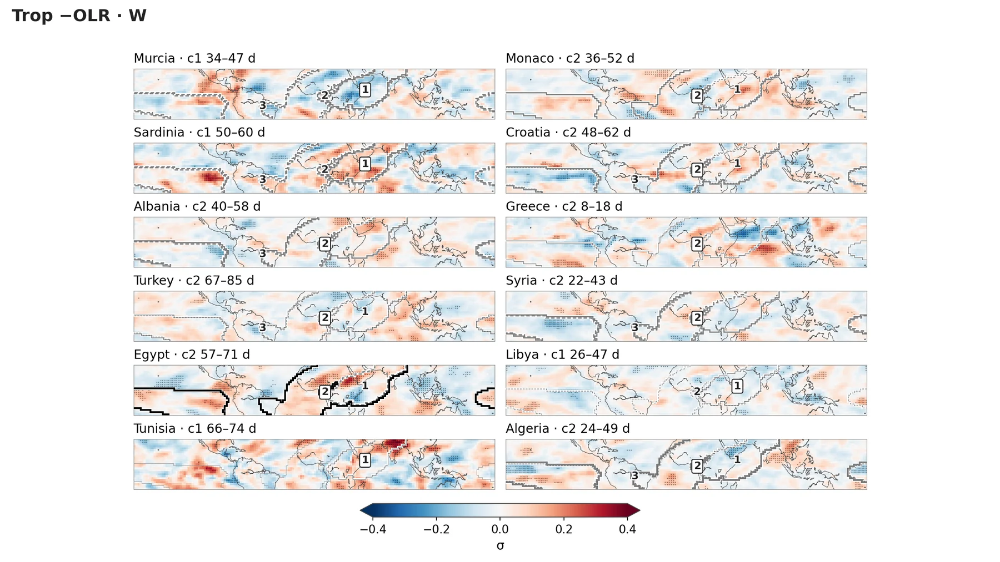
About this figure
Same layout as the D atlas, with the within-year (W) tropical −OLR anomaly at each site's representative window; solid boxed cluster = the panel's cluster, dashed = other selected clusters; thickness = seeds, black = robust; dots = p < 0.05; scale ±0.4σ. Median spatial correlation with D across sites: 0.79.
tres_versiones/figuras/atlas/A_T_olr_W.png
Tropical Z500: detrended (D) composites by site, train 1950–2010
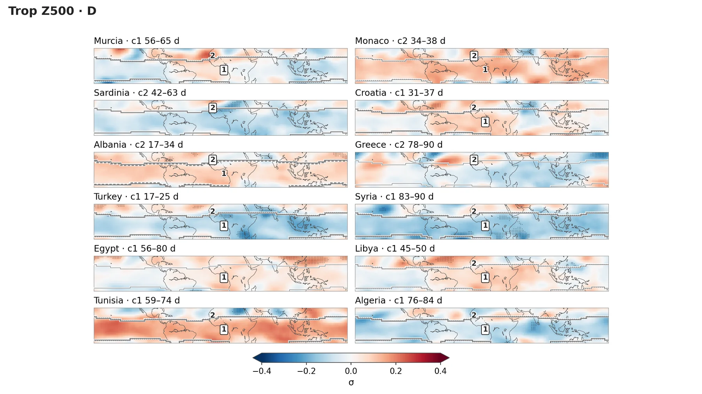
About this figure
One panel per site: training composite of the detrended (D) tropical Z500 anomaly (k = 2) before heatwave days, at the representative window of the field's most-selected cluster in that site (solid outline, boxed number); dashed = other selected clusters (chosen at their own lags). Thickness = seeds, black = robust, grey = not robust; dots = p < 0.05; scale ±0.4σ. Median spatial correlation with D: R 0.82, W 0.80; no selected tropical Z500 pair is significant in D.
tres_versiones/figuras/atlas/A_T_z500_D.png
Tropical Z500: plain-anomaly (R) composites by site, train 1950–2010
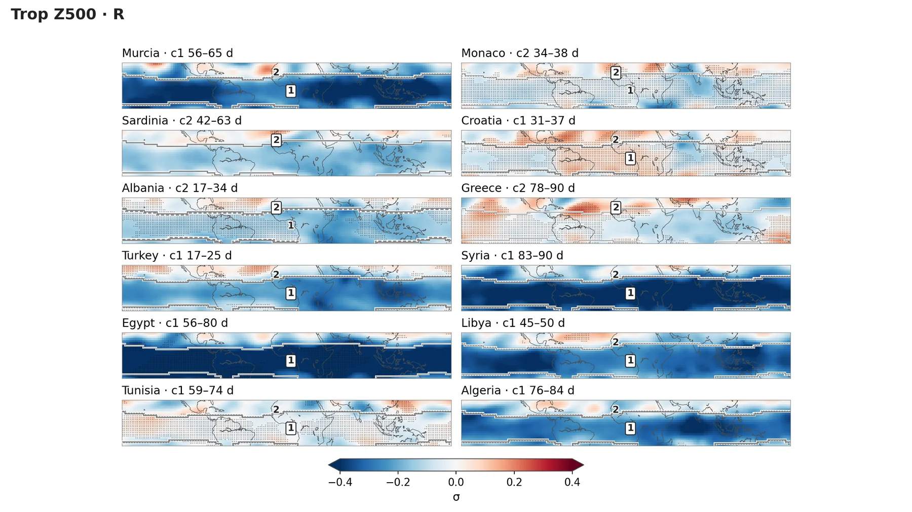
About this figure
Same layout as the D atlas, with the plain anomaly (R) of tropical Z500 at each site's representative window; solid boxed cluster = the panel's cluster, dashed = other selected clusters; thickness = seeds, black = robust; dots = p < 0.05; scale ±0.4σ. Several panels show an almost uniform negative shift from the trend: 61% of the area is at the scale limit in Egypt (56–80 d), 39% in Syria (83–90 d) and 18% in Murcia (56–65 d), against 0% in D.
tres_versiones/figuras/atlas/A_T_z500_R.png
Tropical Z500: within-year (W) composites by site, train 1950–2010
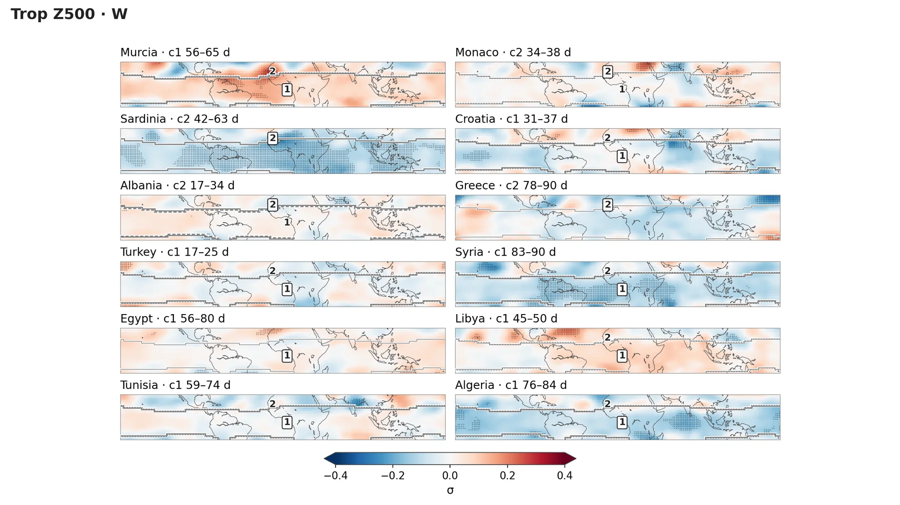
About this figure
Same layout as the D atlas, with the within-year (W) tropical Z500 anomaly at each site's representative window; solid boxed cluster = the panel's cluster, dashed = other selected clusters; thickness = seeds, black = robust; dots = p < 0.05; scale ±0.4σ. Median spatial correlation with D across sites: 0.80.
tres_versiones/figuras/atlas/A_T_z500_W.png
Z500 Asia–N Pacific: detrended (D) composites by site, train 1950–2010
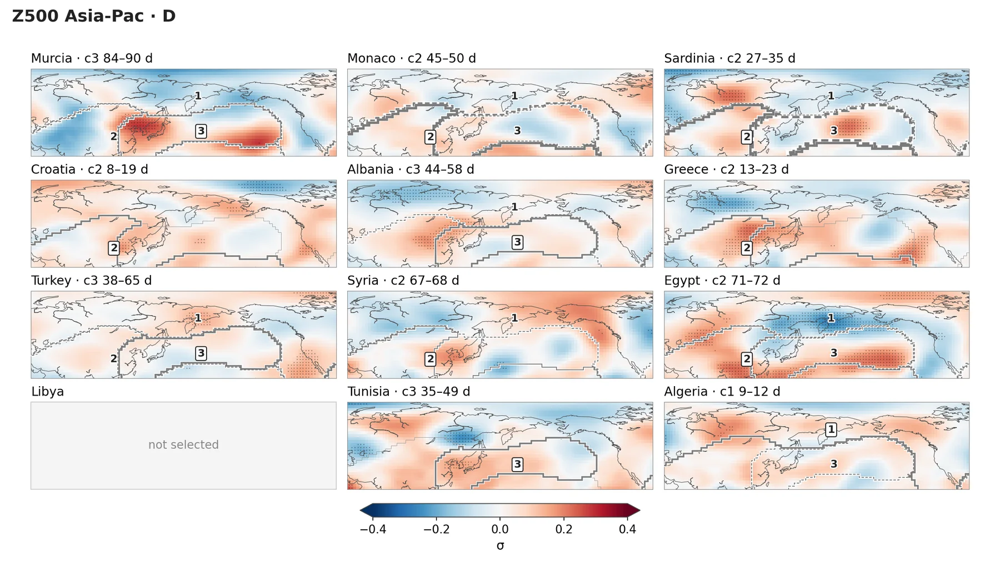
About this figure
One panel per site: training composite of the detrended (D) Z500 anomaly over Asia–North Pacific (k = 3) before heatwave days, at the representative window of the field's most-selected cluster in that site (solid outline, boxed number); dashed = other selected clusters (chosen at their own lags); 'not selected' = never chosen at that site. Thickness = seeds, black = robust, grey = not robust; dots = p < 0.05; scale ±0.4σ. Median spatial correlation with D: R 0.92, W 0.83; this field's significant R pairs are mostly trend (25% of pairs significant in R vs 4% in D).
tres_versiones/figuras/atlas/A_H_z500_D.png
Z500 Asia–N Pacific: plain-anomaly (R) composites by site, train 1950–2010
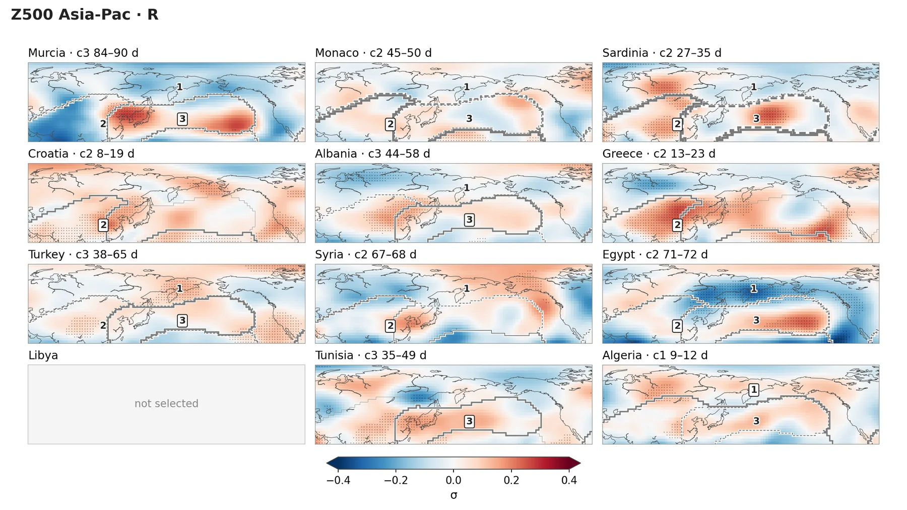
About this figure
Same layout as the D atlas, with the plain anomaly (R) of Asia–North Pacific Z500 at each site's representative window; solid boxed cluster = the panel's cluster, dashed = other selected clusters; thickness = seeds, black = robust; dots = p < 0.05; scale ±0.4σ. Median spatial correlation with D across sites: 0.92.
tres_versiones/figuras/atlas/A_H_z500_R.png
Z500 Asia–N Pacific: within-year (W) composites by site, train 1950–2010
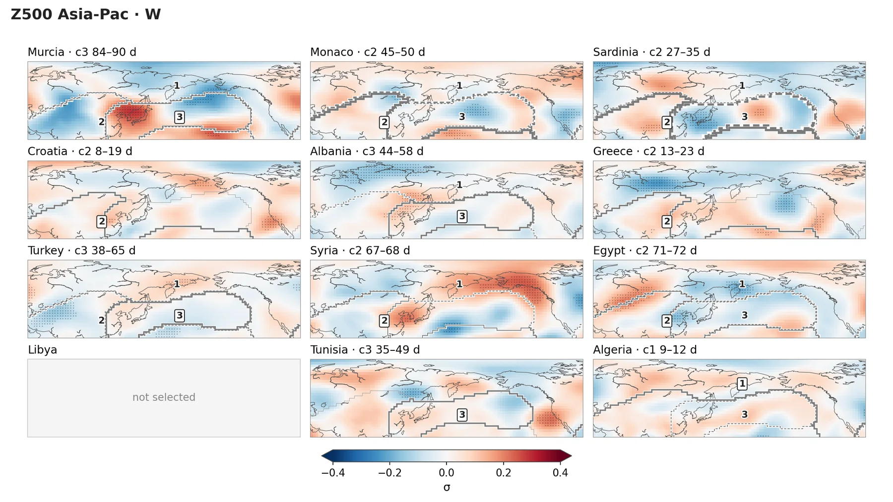
About this figure
Same layout as the D atlas, with the within-year (W) Asia–North Pacific Z500 anomaly at each site's representative window; solid boxed cluster = the panel's cluster, dashed = other selected clusters; thickness = seeds, black = robust; dots = p < 0.05; scale ±0.4σ. Median spatial correlation with D across sites: 0.83.
tres_versiones/figuras/atlas/A_H_z500_W.png
Per-site maps: local clusters
Murcia: R, D and W maps at the selected local clusters (train 1950–2010)
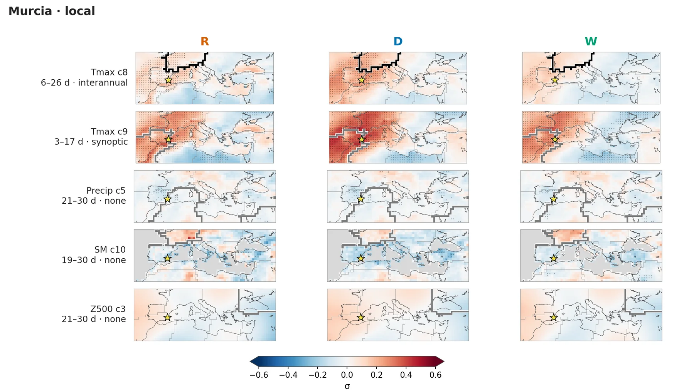
About this figure
Training composites of the plain (R), detrended (D) and within-year (W) anomaly before heatwave days, one row per consistently selected local cluster at its representative window (row label: field, cluster, window, class). The rows are Tmax c8, Tmax c9, Precip c5, SM c10 and Z500 c3 (20 more consistent clusters are omitted); outline thickness = seeds, black = robust in some version, grey = not robust; dots = p < 0.05; star = site; scale ±0.6σ. Warmth over western Europe appears in the two Tmax rows and almost nothing in rows 3–5.
tres_versiones/figuras/sitios/Murcia_mapas_local.png
Monaco: R, D and W maps at the selected local clusters (train 1950–2010)
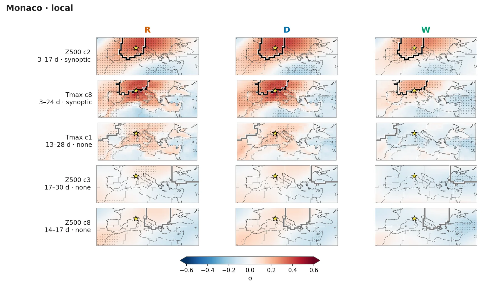
About this figure
Training composites of R, D and W before heatwave days, one row per consistently selected local cluster at its representative window (label: field, cluster, window, class). The rows are Z500 c2, Tmax c8, Tmax c1, Z500 c3 and Z500 c8 (14 more are omitted); thickness = seeds, black = robust, grey = not robust; dots = p < 0.05; star = site; scale ±0.6σ. Only Z500 c2 and Tmax c8 are robust; both are synoptic and look almost the same in R, D and W (R–D spatial correlation 0.996 and 0.96).
tres_versiones/figuras/sitios/Monaco_mapas_local.png
Sardinia: R, D and W maps at the selected local clusters (train 1950–2010)
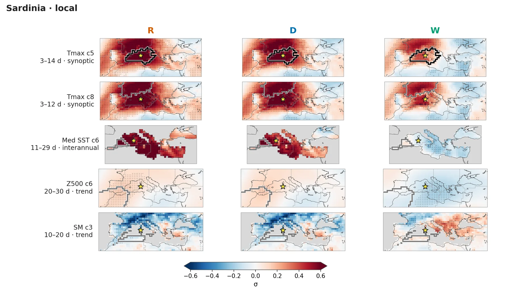
About this figure
Training composites of R, D and W before heatwave days, one row per consistently selected local cluster at its representative window. The rows are Tmax c5 (3–14 d), Tmax c8 (3–12 d), Med SST c6 (11–29 d), Z500 c6 (20–30 d) and SM c3 (10–20 d) (15 more are omitted); thickness = seeds, black = robust, grey = not robust; dots = p < 0.05; star = site; scale ±0.6σ. The Med SST R panel is saturated by the warm trend (37% of the area at the scale limit, 12% in D), and the SST anomaly covers the whole western-central Mediterranean, not just c6.
tres_versiones/figuras/sitios/Cerdenia_mapas_local.png
Croatia: R, D and W maps at the selected local clusters (train 1950–2010)
About this figure
Training composites of R, D and W before heatwave days, one row per consistently selected local cluster at its representative window. The rows are Tmax c2 (3–19 d), Z500 c2 (3–9 d), Tmax c8 (3–16 d), Z500 c8 (3–11 d) and Precip c2 (6–24 d) (11 more are omitted); thickness = seeds, black = robust, grey = not robust; dots = p < 0.05; star = site; scale ±0.6σ. Ridge and heat are centred on the site: in Z500 the three versions are almost equal, in Tmax W is weaker, and the earlier dryness is in Precip c3 over the site, not in the selected c2.
tres_versiones/figuras/sitios/Croacia_mapas_local.png
Albania: R, D and W maps at the selected local clusters (train 1950–2010)
About this figure
Training composites of R, D and W before heatwave days, one row per consistently selected local cluster at its representative window. The rows are Z500 c8 (3–16 d), Tmax c2 (4–17 d), Z500 c5 (3–7 d), MSLP c3 (3–20 d) and Tmax c6 (27–29 d) (10 more are omitted); thickness = seeds, black = robust, grey = not robust; dots = p < 0.05; star = site; scale ±0.6σ. The Balkan ridge is the same in all three columns, the Tmax c2 warmth stays concentrated over the Balkans in W, and the trend pair Tmax c6 is nearly empty in D and W.
tres_versiones/figuras/sitios/Albania_mapas_local.png
Greece: R, D and W maps at the selected local clusters (train 1950–2010)
About this figure
Training composites of R, D and W before heatwave days, one row per consistently selected local cluster at its representative window. The rows are Tmax c2, Tmax c4, Z500 c3, Med SST c1 and Med SST c5 (19 more are omitted; the robust Z500 c8, Precip c6 and Med SST c3 do not fit the 5-row limit); thickness = seeds, black = robust, grey = not robust; dots = p < 0.05; star = site; scale ±0.6σ. The Med SST goes from saturated in R (49% and 64% of the area at the scale limit) to a maximum over the Black Sea in D and weak or negative values outside it in W.
tres_versiones/figuras/sitios/Grecia_mapas_local.png
Turkey: R, D and W maps at the selected local clusters (train 1950–2010)
About this figure
Training composites of R, D and W before heatwave days, one row per consistently selected local cluster at its representative window. The rows are Tmax c10, SM c2, Z500 c5, Med SST c3 and SM c5 (22 more are omitted); thickness = seeds, black = robust, grey = not robust; dots = p < 0.05; star = site; scale ±0.6σ. The Med SST R panel is saturated by the warm shift (38% of the area at the scale limit, 5% in D), while W isolates the synoptic core (dry soil SM c2, Tmax c10, Med SST c3).
tres_versiones/figuras/sitios/Turquia_mapas_local.png
Syria: R, D and W maps at the selected local clusters (train 1950–2010)
About this figure
Training composites of R, D and W before heatwave days, one row per consistently selected local cluster at its representative window. The rows are Z500 c5 (3–10 d), Tmax c10 (3–30 d), Z500 c6, Med SST c1 and SM c4 (18 more are omitted); thickness = seeds, black = robust, grey = not robust; dots = p < 0.05; star = site; scale ±0.6σ. Row 1 shows a ridge over the Aegean with the black c5 outline, almost the same in all three columns; row 2 shows warm Tmax over the eastern Mediterranean and North Africa that weakens in W.
tres_versiones/figuras/sitios/Siria_mapas_local.png
Egypt: R, D and W maps at the selected local clusters (train 1950–2010)
About this figure
Training composites of R, D and W before heatwave days, one row per consistently selected local cluster at its representative window. The rows are Tmax c9 (6–9 d), Tmax c10 (3–18 d), Z500 c4 (23–30 d), Precip c4 and Z500 c5 (8 more are omitted; the first three are robust, black outline); dots = p < 0.05; star = site; scale ±0.6σ. The maps show a cold-west / warm-east dipole, and R shifts everything towards cold (Egypt is the only site whose heatwave days decrease over the training period).
tres_versiones/figuras/sitios/Egipto_mapas_local.png
Libya: R, D and W maps at the selected local clusters (train 1950–2010)
About this figure
Training composites of R, D and W before heatwave days, one row per consistently selected local cluster at its representative window. The rows are Tmax c7 (3–20 d), Tmax c9 (5 d), MSLP c5 (3–9 d), Tmax c8 and Med SST c2 (11 more are omitted); thickness = seeds, black = robust, grey = not robust; dots = p < 0.05; star = site; scale ±0.6σ. A cold-west / warm-over-Libya dipole is almost the same in R, D and W because Libya's heatwaves have no trend in training; the 5-day Tmax R panel saturates 23% of the area, which is real signal (panel mean ≈ 0).
tres_versiones/figuras/sitios/Libia_mapas_local.png
Tunisia: R, D and W maps at the selected local clusters (train 1950–2010)
About this figure
Training composites of R, D and W before heatwave days, one row per consistently selected local cluster at its representative window. The rows are SM c9 (11–30 d), SM c6 (22–30 d), Tmax c5 (3–24 d), Z500 c7 (13–30 d) and Precip c6 (21–22 d) (13 more are omitted); thickness = seeds, black = robust, grey = not robust; dots = p < 0.05; star = site; scale ±0.6σ. The only robust cluster is SM c9, and only under R; Tmax c5 (the site's own cluster) ranks first in its field in R and D but not in W.
tres_versiones/figuras/sitios/Tunez_mapas_local.png
Algeria: R, D and W maps at the selected local clusters (train 1950–2010)
About this figure
Training composites of R, D and W before heatwave days, one row per consistently selected local cluster at its representative window. The rows are Z500 c2 (3–6 d), Z500 c4 (6–20 d), SM c5 (22–30 d), Tmax c3 (18–30 d) and Med SST c1 (9–30 d) (20 more are omitted); thickness = seeds, black = robust, grey = not robust; dots = p < 0.05; star = site; scale ±0.6σ. The 3–6 d Z500 maximum over Iberia, the Gulf of Lion and northern Algeria is the same in R, D and W, while the slower fields keep |W| ≤ 0.11 and no significance.
tres_versiones/figuras/sitios/Argelia_mapas_local.png
Per-site maps: remote clusters
Murcia: R, D and W maps at the selected remote clusters (train 1950–2010)
About this figure
Training composites of the plain (R), detrended (D) and within-year (W) anomaly before heatwave days, one row per consistently selected remote cluster at its representative window (label: field, cluster, window, class). The rows are N Atl SST c3, MSLP NAE c1, N Atl SST c1, Trop SST c1 and Z500 NAE c1 (8 more are omitted); thickness = seeds, black = robust, grey = not robust; dots = p < 0.05; scale ±0.4σ. The warm N Atlantic SST band (c3) appears only in D, and the tropical SST R panel is saturated.
tres_versiones/figuras/sitios/Murcia_mapas_remoto.png
Monaco: R, D and W maps at the selected remote clusters (train 1950–2010)
About this figure
Training composites of R, D and W before heatwave days, one row per consistently selected remote cluster at its representative window. The rows are Z500 Asia-Pac c2, Trop SST c1, Trop SST c2, Z500 Asia-Pac c1 and Z500 NAE c3 (2 more are omitted); thickness = seeds, grey = not robust; dots = p < 0.05; scale ±0.4σ. None is robust, and the R signal in tropical SST is trend that disappears in W.
tres_versiones/figuras/sitios/Monaco_mapas_remoto.png
Sardinia: R, D and W maps at the selected remote clusters (train 1950–2010)
About this figure
Training composites of R, D and W before heatwave days, one row per consistently selected remote cluster at its representative window. The rows are Z500 NAE c3, Z500 Asia-Pac c2 and c3, Trop Z500 c2 and Trop −OLR c1 (−OLR c2 and c3 are omitted); thickness = seeds, black = robust, grey = not robust; dots = p < 0.05; scale ±0.4σ. Z500 NAE c3 and Z500 Asia-Pacific c2 are trend pairs: W removes them and neither is significant in test.
tres_versiones/figuras/sitios/Cerdenia_mapas_remoto.png
Croatia: R, D and W maps at the selected remote clusters (train 1950–2010)
About this figure
Training composites of R, D and W before heatwave days, one row per consistently selected remote cluster at its representative window. The rows are N Atl SST c2 (52–71 d), Trop SST c2 (41–56 d), Z500 Asia-Pac c2 (8–19 d), Trop Z500 c1 (31–37 d) and Trop −OLR c2 (48–62 d); thickness = seeds, grey = not robust; dots = p < 0.05; scale ±0.4σ. The R signals weaken in D (the western Atlantic, c3, remains) and almost vanish in W; none of these remote pairs has a class.
tres_versiones/figuras/sitios/Croacia_mapas_remoto.png
Albania: R, D and W maps at the selected remote clusters (train 1950–2010)
About this figure
Training composites of R, D and W before heatwave days, one row per consistently selected remote cluster at its representative window. The rows are Trop SST c2 (57–71 d, 'interannual?' = depends on the trend model), Trop Z500 c2 and c1, Z500 Asia-Pac c3 and Trop −OLR c2 (1 more is omitted); thickness = seeds, grey = not robust; dots = p < 0.05; scale ±0.4σ. In the two tropical Z500 rows, R is uniformly negative while D is not, which marks a trend.
tres_versiones/figuras/sitios/Albania_mapas_remoto.png
Greece: R, D and W maps at the selected remote clusters (train 1950–2010)
About this figure
Training composites of R, D and W (stacked) before heatwave days for the two consistently selected remote clusters, Trop SST c3 (41–51 d) and Z500 Asia-Pac c2 (13–23 d), at their representative windows; thickness = seeds, grey = not robust; dots = p < 0.05; scale ±0.4σ. The R signal of Z500 Asia-Pacific c2 does not survive in D or W. Inside Trop SST c3 the training values are −0.23σ in R (mostly period shift), −0.19σ in D and −0.11σ in W, and ≈ 0 in test.
tres_versiones/figuras/sitios/Grecia_mapas_remoto.png
Turkey: R, D and W maps at the selected remote clusters (train 1950–2010)
About this figure
Training composites of R, D and W before heatwave days, one row per consistently selected remote cluster at its representative window. The rows are N Atl SST c1, Trop SST c2, Z500 NAE c3, N Atl SST c2 and MSLP NAE c3 (4 more are omitted); thickness = seeds, black = robust, grey = not robust; dots = p < 0.05; scale ±0.4σ. The robust remote pairs (N Atl SST c1, Trop SST c2) are year-to-year signals with W ≈ 0, and both become 'trend' with a quadratic trend model.
tres_versiones/figuras/sitios/Turquia_mapas_remoto.png
Syria: R, D and W maps at the selected remote clusters (train 1950–2010)
About this figure
Training composites of R, D and W before heatwave days for the three consistently selected remote clusters (Trop Z500 c1, Trop −OLR c2 and c3) at their representative windows; thickness = seeds, grey = not robust; dots = p < 0.05; scale ±0.4σ. The Trop Z500 c1 R panel is saturated by the period shift (39% of the area at the scale limit, 0% in D) and weak in D and W, while the −OLR rows look like noise.
tres_versiones/figuras/sitios/Siria_mapas_remoto.png
Egypt: R, D and W maps at the selected remote clusters (train 1950–2010)
About this figure
Training composites of R, D and W before heatwave days, one row per consistently selected remote cluster at its representative window. The rows are Trop −OLR c2 (57–71 d, robust), MSLP NAE c2 and Trop SST c1, c3 and c2 (3 more are omitted); thickness = seeds, black = robust, grey = not robust; dots = p < 0.05; scale ±0.4σ. The tropical SST R panels are saturated negative (36–37% of the area at the scale limit, mean −0.30σ; 2% in D), and nothing is left in W.
tres_versiones/figuras/sitios/Egipto_mapas_remoto.png
Libya: R, D and W maps at the selected remote clusters (train 1950–2010)
About this figure
Training composites of R, D and W before heatwave days for the three consistently selected remote clusters (Z500 NAE c3, Trop SST c3 and c1) at their representative windows; thickness = seeds, grey = not robust; dots = p < 0.05; scale ±0.4σ. There are no significant nodes inside Z500 NAE c3 and only scattered dots in the SST clusters (≤ 4% of the area, below the 5% expected by chance), while the tropical R panels are shifted as a block.
tres_versiones/figuras/sitios/Libia_mapas_remoto.png
Tunisia: R, D and W maps at the selected remote clusters (train 1950–2010)
About this figure
Training composites of R, D and W before heatwave days, one row per consistently selected remote cluster at its representative window. The rows are Trop SST c1, N Atl SST c2, Trop Z500 c1, Trop SST c3 and Z500 NAE c1 (3 more are omitted); thickness = seeds, grey = not robust; dots = p < 0.05; scale ±0.4σ. Trop SST c1 and Trop Z500 c1 are trend pairs: their R contrast is significant but their D contrast is not.
tres_versiones/figuras/sitios/Tunez_mapas_remoto.png
Algeria: R, D and W maps at the selected remote clusters (train 1950–2010)
About this figure
Training composites of R, D and W before heatwave days, one row per consistently selected remote cluster at its representative window. The rows are N Atl SST c3 (62–73 d), Trop −OLR c2, Z500 NAE c2, Z500 NAE c3 and Trop Z500 c1 (4 more are omitted); thickness = seeds, grey = not robust; dots = p < 0.05; scale ±0.4σ. N Atl SST c3 shows warming in the c3 band and cooling in the tropical Atlantic in R and D that disappears in W, and Trop Z500 c1 has a near-uniform negative R shift (trend).
tres_versiones/figuras/sitios/Argelia_mapas_remoto.png
Per-site lag profiles
Murcia: R, D and W anomaly vs lag at the selected clusters (train and test)
About this figure
In-cluster anomaly at each individual lag for the clusters on Murcia's map slides (top row local, lags 3–30 d; bottom row remote, 3–90 d): R orange, D blue, W green; thick = train 1950–2010, thin = test 2011–2021; grey shading = window chosen by each seed (darker where seeds overlap). The y-axis is fixed at ±1.5σ (local) and ±0.6σ (remote); test R and D are raw means that include the warm 2011–2021 shift, and curves that leave the axis are clipped with a triangle. Tmax c8 and c9 drop sharply up to lag 10 (c8 ≈ 0 by lags 16–20, c9 stays at 0.1–0.2σ), and N Atl SST c3 is flat.
tres_versiones/figuras/sitios/Murcia_lags.png
Monaco: R, D and W anomaly vs lag at the selected clusters (train and test)
About this figure
In-cluster anomaly at each lag for the clusters on Monaco's map slides (top local, 3–30 d; bottom remote, 3–90 d): R orange, D blue, W green; thick = train 1950–2010, thin = test 2011–2021; shading = windows chosen by the seeds. Fixed y-axis ±1.5σ / ±0.6σ; clipped test curves are marked with triangles. Z500 c2 and Tmax c8 decay from about 0.8–1.2σ at lag 3 to about 0 by lags 12–13 in W (14–17 in training R), and the test R curves of the remote clusters are shifted by the 2011–2021 warming.
tres_versiones/figuras/sitios/Monaco_lags.png
Sardinia: R, D and W anomaly vs lag at the selected clusters (train and test)
About this figure
In-cluster anomaly at each lag for the clusters on Sardinia's map slides (top local, 3–30 d; bottom remote, 3–90 d): R orange, D blue, W green; thick = train 1950–2010, thin = test 2011–2021; shading = windows chosen by the seeds. Fixed y-axis ±1.5σ / ±0.6σ; the test R curve of Med SST c6 leaves the axis (triangle) because of the warm 2011–2021 shift. Tmax c5 W is 0.57σ at lags 3–7 but 0.04σ at lags 8–14: the information is in the first week.
tres_versiones/figuras/sitios/Cerdenia_lags.png
Croatia: R, D and W anomaly vs lag at the selected clusters (train and test)
About this figure
In-cluster anomaly at each lag for the clusters on Croatia's map slides (top local, 3–30 d; bottom remote, 3–90 d): R orange, D blue, W green; thick = train 1950–2010, thin = test 2011–2021; shading = windows chosen by the seeds; fixed y-axis ±1.5σ / ±0.6σ with clipped test curves marked by triangles. Tmax and Z500 fall from 0.7–1.1σ at lag 3 (R, D and W together) to 0.2–0.3σ in R and ≈ 0.1σ in W at lag 10. The remote curves are flat in training, and the test curves carry the period shift (the R test curve of Trop Z500 c1 is clipped).
tres_versiones/figuras/sitios/Croacia_lags.png
Albania: R, D and W anomaly vs lag at the selected clusters (train and test)
About this figure
In-cluster anomaly at each lag for the clusters on Albania's map slides (top local, 3–30 d; bottom remote, 3–90 d): R orange, D blue, W green; thick = train 1950–2010, thin = test 2011–2021; shading = windows chosen by the seeds; fixed y-axis ±1.5σ / ±0.6σ. Z500 c8 and Tmax c2 drop quickly between lags 3 and 10. The test R curves of Trop SST c2 and Trop Z500 c1 leave the axis (triangles) because of the 2011–2021 shift.
tres_versiones/figuras/sitios/Albania_lags.png
Greece: R, D and W anomaly vs lag at the selected clusters (train and test)
About this figure
In-cluster anomaly at each lag for the clusters on Greece's map slides (top local, 3–30 d; bottom remote, 3–90 d): R orange, D blue, W green; thick = train 1950–2010, thin = test 2011–2021; shading = windows chosen by the seeds; fixed y-axis ±1.5σ / ±0.6σ. Tmax and Z500 decay to ≈ 0 by lag 15 in W, and the W of the SST changes sign between lag 3 and lags 10–20. The test R curves of Med SST c1 and c5 leave the axis (up to 1.84 and 2.06σ).
tres_versiones/figuras/sitios/Grecia_lags.png
Turkey: R, D and W anomaly vs lag at the selected clusters (train and test)
About this figure
In-cluster anomaly at each lag for the clusters on Turkey's map slides (top local, 3–30 d; bottom remote, 3–90 d): R orange, D blue, W green; thick = train 1950–2010, thin = test 2011–2021; shading = windows chosen by the seeds; fixed y-axis ±1.5σ / ±0.6σ with clipped test curves marked by triangles. In training, dry soil SM c2 has W −0.64σ at 3 d, −0.14σ at 10 d and ≈ 0 from 14 d, while R and D stay at −0.16 to −0.21σ over 14–30 d (a synoptic part plus a year-to-year part). The test R and D curves of Med SST c3 leave the axis.
tres_versiones/figuras/sitios/Turquia_lags.png
Syria: R, D and W anomaly vs lag at the selected clusters (train and test)
About this figure
In-cluster anomaly at each lag for the clusters on Syria's map slides (top local, 3–30 d; bottom remote, 3–90 d): R orange, D blue, W green; thick = train 1950–2010, thin = test 2011–2021; shading = windows chosen by the seeds; fixed y-axis ±1.5σ / ±0.6σ. In training, Z500 c5 and Tmax c10 fall from about 0.6–0.8σ at lag 3 to about 0.1–0.2σ at lag 10, and SM c4 is negative only at short lags, outside the shaded windows. The thin test R and D curves of Med SST c1 and Trop Z500 c1 reflect the period shift.
tres_versiones/figuras/sitios/Siria_lags.png
Egypt: R, D and W anomaly vs lag at the selected clusters (train and test)
About this figure
In-cluster anomaly at each lag for the clusters on Egypt's map slides (top local, 3–30 d; bottom remote, 3–90 d): R orange, D blue, W green; thick = train 1950–2010, thin = test 2011–2021; shading = windows chosen by the seeds; fixed y-axis ±1.5σ / ±0.6σ. Tmax c10 and Z500 c5 peak at lags 3–7, but the windows chosen for Z500 c5 lie outside that peak. The test R curves of Trop SST c1 and c2 leave the axis because of the 2011–2021 shift.
tres_versiones/figuras/sitios/Egipto_lags.png
Libya: R, D and W anomaly vs lag at the selected clusters (train and test)
About this figure
In-cluster anomaly at each lag for the clusters on Libya's map slides (top local, 3–30 d; bottom remote, 3–90 d): R orange, D blue, W green; thick = train 1950–2010, thin = test 2011–2021; shading = windows chosen by the seeds; fixed y-axis ±1.5σ / ±0.6σ. The signal of Tmax c7, Tmax c9 and MSLP c5 ends around lag 10. The test R curves of Tmax c7 and Med SST c2 leave the axis (up to 1.56 and 1.52σ) because of the 2011–2021 warming.
tres_versiones/figuras/sitios/Libia_lags.png
Tunisia: R, D and W anomaly vs lag at the selected clusters (train and test)
About this figure
In-cluster anomaly at each lag for the clusters on Tunisia's map slides (top local, 3–30 d; bottom remote, 3–90 d): R orange, D blue, W green; thick = train 1950–2010, thin = test 2011–2021; shading = windows chosen by the seeds; fixed y-axis ±1.5σ / ±0.6σ. Over the site, Tmax c5 has W 0.51σ at lags 3–7 but 0.00σ at lags 8–24, so the signal belongs to the start of the episode. The test R curves of Trop SST c1 and Trop Z500 c1 leave the axis (triangles).
tres_versiones/figuras/sitios/Tunez_lags.png
Algeria: R, D and W anomaly vs lag at the selected clusters (train and test)
About this figure
In-cluster anomaly at each lag for the clusters on Algeria's map slides (top local, 3–30 d; bottom remote, 3–90 d): R orange, D blue, W green; thick = train 1950–2010, thin = test 2011–2021; shading = windows chosen by the seeds; fixed y-axis ±1.5σ / ±0.6σ. The Z500 c2 profile peaks at lag 3 (≈ 0.65σ) and falls to ≈ 0.2σ by lag 7. The test R curves of N Atl SST c3 and Trop Z500 c1 leave the axis (triangles).
tres_versiones/figuras/sitios/Argelia_lags.png